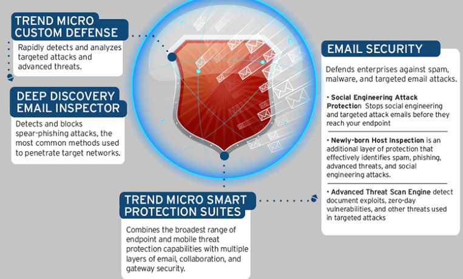

Não apenas um e-mail de phishing pode conter um link ou anexo malicioso tradicional, as mensagens de phishing também podem estabelecer a base para infecções de ransomware, comprometimento de e-mail comercial e ataques direcionados altamente avançados.
Soluções:
- InterScan Messaging Security , um gateway local que protege contra spam e ataques de email direcionados.
- Os usuários corporativos podem tirar proveito do
ScanMail Suite para IBM Domino ou
Microsoft Exchange , projetado especificamente para localizar e proteger contra phishing nessas plataformas de e-mail.
- O
Hosted Email Security da Trend Micro , disponível como opção hospedada ou em nuvem, pode proteger ainda mais a Microsoft, Google ou outras plataformas de e-mail no local ou hospedadas
Phishing é um ataque geralmente exploratório que visa um público mais amplo, enquanto o spear phishing é uma versão direcionada de phishing.
Phishing: é um ataque mais direto - uma vez que informações como credenciais bancárias são roubadas, os invasores têm praticamente o que pretendiam obter
Spear phishing:
- o roubo bem-sucedido de credenciais ou informações pessoais geralmente é apenas o começo do ataque, porque é usado apenas para obter acesso à rede alvo - uma ação que acaba levando a um ataque direcionado.
-Spear phishing se concentra em indivíduos ou funcionários específicos dentro de uma organização e contas de mídia social como Twitter, Facebook e LinkedIn para personalizar especificamente e-mails precisos e atraentes
Trend Micro security Console:
Para se proteger do Phishing
O Trend Micro Custom Defense detecta, analisa e responde rapidamente a ataques direcionados avançados.
Para se defender contra spear phishing, o Deep Discovery Email Inspector ajuda a identificar e bloquear e-mails de spear phishing na fase inicial da maioria dos ataques direcionados. Ele reduz o risco de ataques ao adicionar uma camada de inspeção transparente que descobre conteúdo malicioso, anexos e links de URL que passam despercebidos pela segurança de email padrão.
O Trend Micro Smart Protection Suite combina uma ampla gama de recursos de proteção contra ameaças móveis e terminais, incluindo proteção contra ataques de engenharia social, inspeção de host recém-criado e mecanismo avançado de verificação de ameaças para proteger e-mails.
